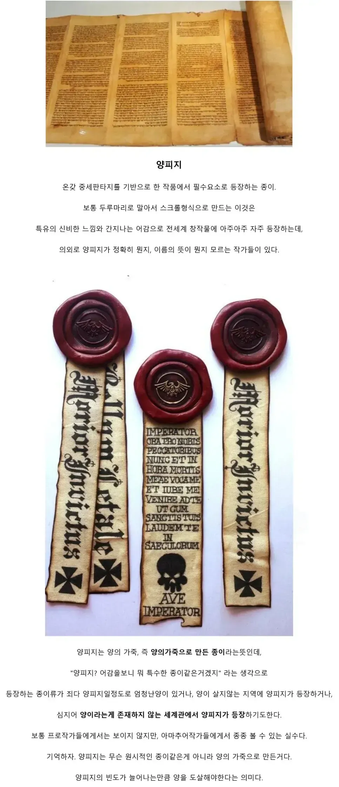
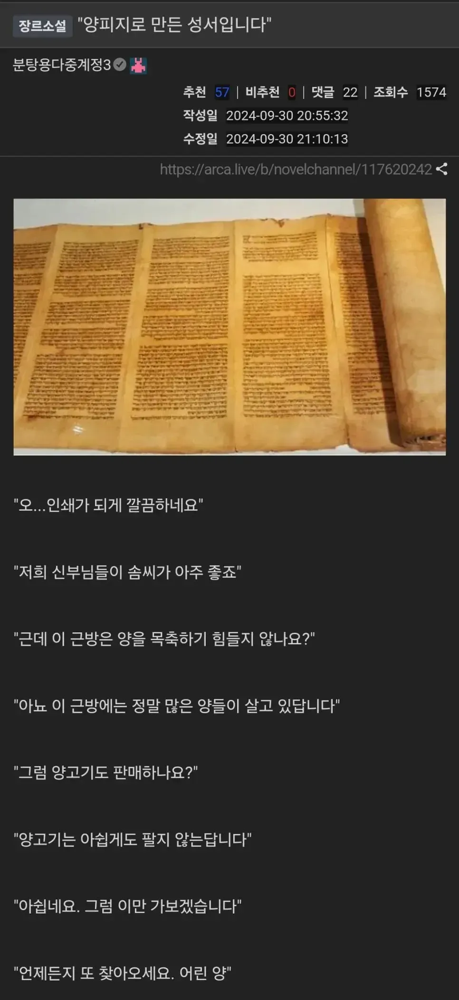
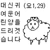

양배추 양상추 양파는 서양에서 들어 온 물건이라는 의미로 접두사 '양'이 붙은 거니까
양피지는 서양에서 들어 온 종이란 뜻이겠구나!
<- 합당한 추론, 완전히 틀린 말은 아님
한자로 쓰면 洋, 羊
皮 중간에 가죽 피 자가 있으니 ... 틀린말임
틀린말임
양이 그 양이면
양놈들 가죽으로 만든 종이란 뜻임
어린양...
저들의 가죽을 벗겨 글씨를 새겨라 ㄷㄷㄷ
코쟁이 가죽을 벗겨 글을 쓰다
피는 뭐 가죽처럼 얇다겠지 << 뇌에서 잘받아들임
양이 없는 세계관 <- 이게 더 희귀할거 같은데
조선
워해머 40k부터가 양이 없음
그럼 39K까지는 있었음?
그냥 모든 동물들이 멸절한 세계관

성경이 네크로노미콘이었냐고 ㅋㅋ
해리포터에 양피지가 자주 등장하던데
중세를 무대로 한 판타지 소설이나 만화, 애니를 볼 때 종이가 없는 설정에서 종이 대신 양피지를 많이 사용하는 장면을 가끔 볼 수 있다. 하지만 실제 중세에서는 양피지, 특히 양피지로 만든 책은 매우 고가의 귀중품이었다.
양피지(parchment)는 동물(주로 양)로 만들었는데 주로 어린양이나 염소, 송아지의 가죽으로 제작되었다. 최고급 양피지인 '벨럼'은 중요한 성서나 왕실 문서 등에 사용되었는데 어린 송아지 가죽만 사용했다. 성경 한 권이나 대형 서적 한 권을 만들기 위해 최소 100~300 마리 이상의 동물 가죽이 필요했다.
당시 가축의 가죽 자체가 그렇게 희귀한 건 아니지만 양피지로 만드는 방법도 매우 까다로웠다. 가죽의 털과 지방을 제거하기 위해 석회수에 장시간 담근 후, 특수한 틀에 팽팽하게 고정해서 말려야 한다. 또한 원하는 두께가 나올 때까지 달걀 모양의 칼로 깎아내고 부리스톤으로 가공하는 과정도 매우 고난도로 전문 장인이 필요했다. 여기에다 필경사가 직접 쓰고 삽화도 별도로 그리고 제본까지 해야 하니 책의 가격이 비쌀 수밖에 없었다. 중세 유럽에서 양피지 책 한 권의 가격은 작은 농장 하나의 가격이나 숙련된 노동자의 수년 치 임금과 맞먹었다. 초기 그리스도교에서는 양피지로 만든 성경 한 권을 사기 위해 전재산을 팔아야 한다는 얘기도 있었다.
그러다 보니 글이 적힌 양피지를 물리적으로 긁거나 씻어서 지운 뒤, 그 위에 새로운 글을 다시 쓰는 팔림프세스트(palimpsest) 기법도 발전했다. 오늘날에는 양피지에 희미하게 남은 원래 글을 분석해서 밑에 있던 고대 문헌을 복원하기도 한다. 실제로 로마 시대에 그리스 시대에 쓴 양피지를 긁어내고 새로 쓴 것도 발견되기도 했으며 아르키메데스의 필사본이 담긴 양피지를 무려 8년에 걸쳐 복원해 낸 일도 있었다.
양피지는 보관에도 신경 써야 했다. 무두질하지 않은 동물 가죽이라 습기에 민감해 시간이 지나면 미묘하게 뒤틀어진다. 특히 여러 장을 묶어 놓은 책의 경우 뒤틀려버리는 일도 생기기 때문에 양피지 책은 굵은 실과 튼튼한 가죽끈으로 페이지를 꿰매고 두꺼운 나무판자로 표지를 제본하고 그것도 부족해서 책을 덮은 상태로 표지를 고정하는 잠금장치까지 달아놓았다. 보관 역시 세로로 꼽지 말고 가급적 가로로 뉘어서 보관하며 서적용 누름돌을 별도로 올려놓기도 했다.
이러한 문제점 때문에 실제로 양피지는 유럽에서도 널리 사용되지 못하다가 14~15세기 이후 중국에서 유입된 제지술이 보급되고 인쇄술이 발달하면서 종이에 급격하게 기록 매체의 자리를 넘겨주게 되었다.

스크롤이 비싼이유 = 양피지로 만들어져서
양피지 = 양의 가죽으로 만든 종이
그럼 여기서 질문
양이 없는데 양피지는 어케나오나요??
답은 아인즈울고운을 보라
이 미친놈들은 인간으로 양피지 만드는계획을 수립하고
실제 민간인 대상으로 피륙을 벗겨서 양피지 만드는걸 하고있다.
인간 = 양임 ㅋㅋ!!
성왕국 양각양 ㄷㄷㄷㄷㄷ
하느님의 어린'양'

그렇다면 고피지나 오피지
파피루스도 있지
점소이 여기 냉수 한컵!
책벌레의 하극상에서보면 종이는 없고 양피지같은건 아주 귀한 계약이나 귀족들이나 쓰는것으로
나오지 ... 덕분에 서민들은 목판에다가 글씨를 써서 기록을 남김 ...
책만들기와 종이만들기가 의외로 현실적이라 내가 좋아하는 소설
판타지면 뭐 몬스터 가죽같은거 나오지않을까
소파 (걸작)
인피지
돼지는 껍데기도 먹는데 양은 못먹나보네. 하긴 우리나라에 많이 없기도 했겠다
헥스걸면 양나옴 님도 쏘셈
네크로노미콘 ㄷㄷㄷ
예?
판타지면 마법이 있잔아.. 사람을 양변시켜서 만들면 되지
판타지면 ... 사람을 양변시키기보단 노예를 잡아다가 가죽을 벗기거나 고블린같은
몬스터의 가죽을 쓰면 되지 ...
어릴때… 아마 초등 고학년에서 중딩 초반 사이일텐데
무슨 글을 보다 당나귀피지로 만든 책이라는 주석 설명을 보고
대체 피지를 짜서 책을 어떻게 만드는거지?? 하며 한참 끙끙대며 생각했던 기억이 나네 ㅋㅋㅋ
양피지는 양 + 피지 라는 생각은 전혀 못하고
인간 도축을 목격함(-10)
???: 가족여행